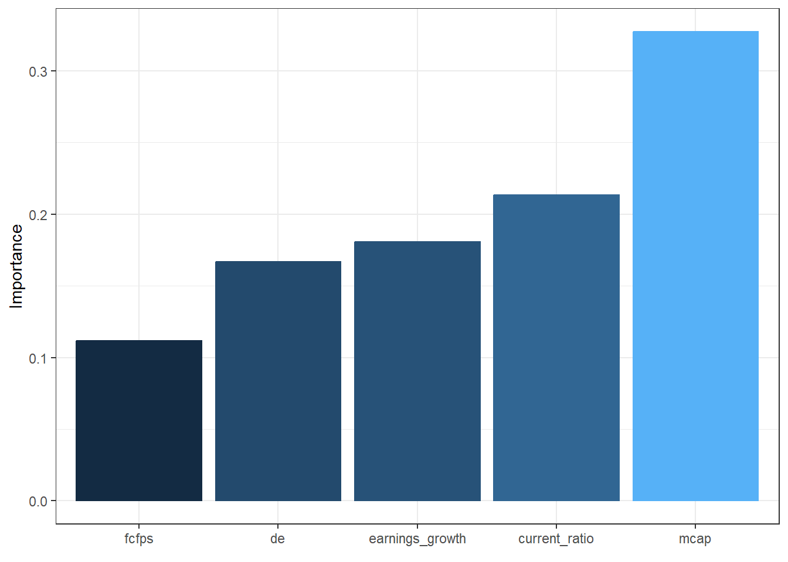
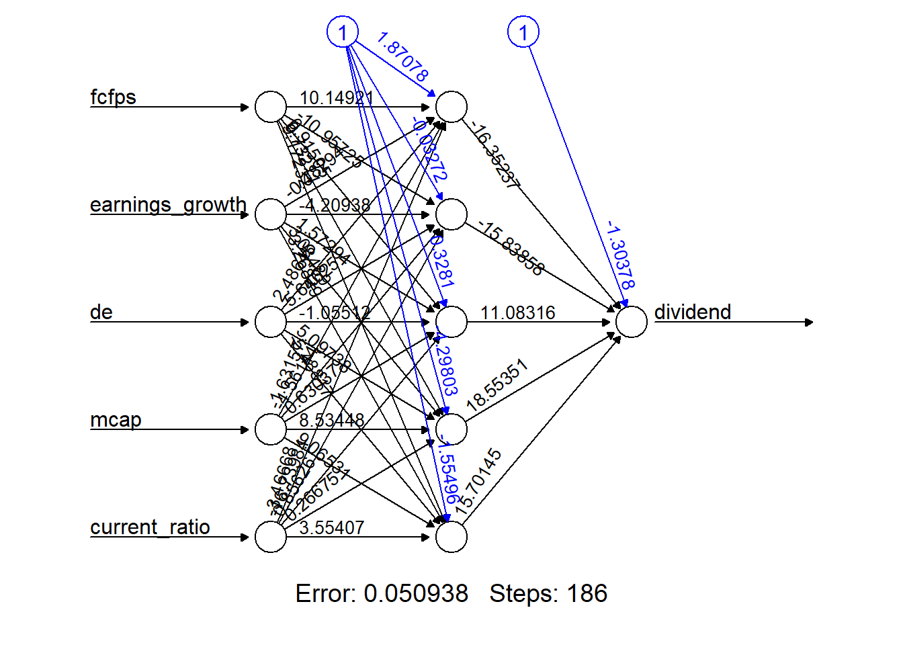
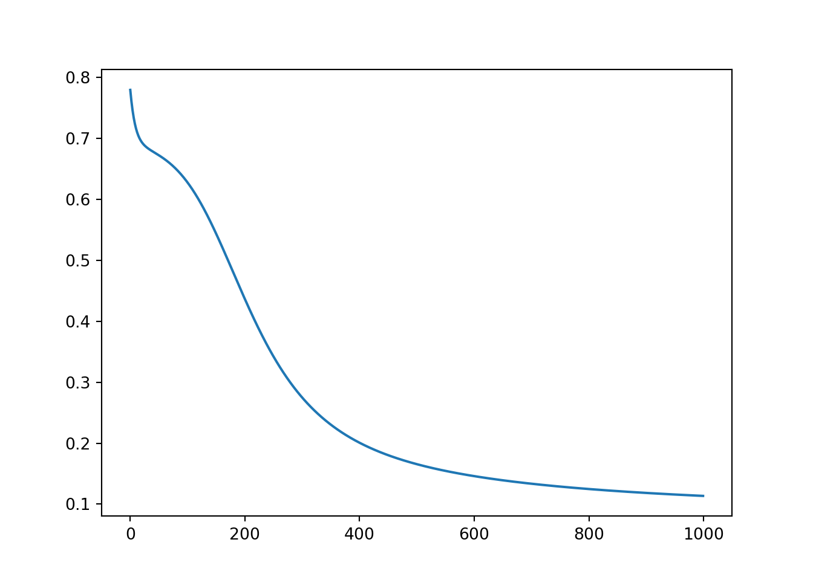

5 Exercise 3: Dividend data
In this example, our goal is to develop a neural network to determine if a stock pays a dividend or not. The dataset is stored under dividendinfo.csv, which includes one response variable and five predictor variables.
dividend(class): A value of 1 indicates that the stock pays a dividend; 0 indicates that the stock that does not pay a dividend.fcfps: Free cash flow per share (in $)earnings_growth: Earnings growth in the past year (in %)de: Debt to Equity ratiomcap: Market Capitalization of the stockcurrent_ratio: Current Ratio (or Current Assets/Current Liabilities)
Neural Networks in R
Task
- Read in the data and perform exploratory analysis. What have you observed?
dividend <- read.csv("dividendinfo.csv")
# some example codes for numerical summaries
summary(dividend)
library(skimr)
skim(dividend)
# some example codes for graphical summaries
pairs(dividend)
libray(GGally)
ggpairs(dividend)
par(mfrow=c(3,2));
invisible(lapply(2:ncol(dividend),function(i) boxplot(dividend[,i]~dividend$dividend)))- Pre-process and split the data to prepare for training and evaluating a neural network.
As all variables are continuous and they have quite different ranges, scale them either using standardisation or min-max normalisation.
While there are built-in functions such as scale to standardise the entire data, the best practice is to split the data into training and test first and then apply standardisation/normalisation. This could avoid information leakage from training to test data.
# Data split
set.seed(1)
idx <- sample(nrow(dividend),0.8*nrow(dividend))
train <- dividend[idx,]
test <- dividend[-idx,]
# option 1: Standardise the data
means <- apply(train[,2:6], 2, mean)
sds <- apply(train[,2:6], 2, sd)
train.std <- scale(train[,2:6])
train.std <- data.frame(cbind(train[,1],train.std))
test.std <- scale(test[,2:6], means, sds)
test.std <- data.frame(cbind(test[,1],test.std))
colnames(train.std) <- colnames(train)
colnames(test.std) <- colnames(test)
# option 2: Normalise the data
min_max_scale_test <- function(x_tr, x_te){
mins <- apply(x_tr, 2, min)
maxs <- apply(x_tr, 2, max)
x_te <- rbind(mins,maxs, x_te)
x_te <- apply(x_te, 2, function(x) (x-x[1])/(x[2]-x[1]))
x_te <- x_te[-c(1:2),]
}
train.norm <-apply(train[,2:6], 2, function(x) (x-min(x))/(max(x)-min(x)) )
train.norm <-data.frame(cbind(train[,1],train.norm))
test.norm <-min_max_scale_test(train[,2:6], test[,2:6])
test.norm <-data.frame(cbind(test[,1], test.norm))
colnames(train.norm) <- colnames(train)
colnames(test.norm) <- colnames(test)- Build a neural network with a single hidden layer, any number of hidden nodes, and the logistic function as the activation function. Interpret the relative importance of variables using the
garsonfunction.
set.seed(1)
nn_di <- neuralnet(dividend~., data=train.std, hidden=c(5), err.fct="ce", act.fct="logistic", linear.output=FALSE, likelihood=TRUE)
garson(nn_di)
We can see that the variable current_ratio is the one with the strongest relationship with the response variable dividend, followed by de, fcfps and mcap. The variable earnings_growth has the least relationship with dividend.
- Fit the above model multiple times using the argument
repand select the optimal model.
set.seed(1)
nn_di <- neuralnet(dividend~., data=train.std, hidden=c(5), err.fct="ce", act.fct="logistic", linear.output=FALSE, likelihood=TRUE, rep=5)
# plot(nn_di)
plot(nn_di, rep="best")
From the plots (plot(nn_di)), we can see that the optimisation algorithm stops at different iterations (from Steps) and lead to differnt cross-entropy loss (from Error). In general, training the network longer decreases the cross-entropy loss. However, this decrease takes place on the training data set and may not generalise to the test. In other words, training the model longer may increase the risk of overfitting.
To select the optimal model, we could look at the AIC and BIC values.
## [1] 3## [1] 3AIC and BIC agree in this case and they both choose the third repetition.
- Evaluate the classification performance.
Neural Networks in PyTorch
Let's try to complete the previous tasks in Python and PyTorch.
- Load the data, pre-process it and split the data into training and test sets.
import pandas as pd
from sklearn.preprocessing import StandardScaler, MinMaxScaler
import torch.optim as optim
dividend = pd.read_csv("dividendinfo.csv")
dividend.iloc[:,1:6] = dividend.iloc[:,1:6].astype(np.float64)
np.random.seed(1)
# Data split
idx = np.random.choice(dividend.index, size=int(0.8 * len(dividend)), replace=False)
train = dividend.loc[idx]
test = dividend.drop(idx)
# Option 1: Standardise the data
scaler = StandardScaler()
train_std = train.copy()
train_std.iloc[:, 1:6] = scaler.fit_transform(train.iloc[:, 1:6]) # Fit on the training data and transform it
test_std = test.copy()
test_std.iloc[:, 1:6] = scaler.transform(test.iloc[:, 1:6]) # Use the training data's parameters to standardise the test data
# Option 2: Normalise the data
scaler_norm = MinMaxScaler()
train_norm = train.copy()
train_norm.iloc[:, 1:6] = scaler_norm.fit_transform(train.iloc[:, 1:6])
test_norm = test.copy()
test_norm.iloc[:, 1:6] = scaler_norm.transform(test.iloc[:, 1:6])- Use the Sequential API or subclass
nn.Moduleto build a single-layer perceptron with logistic/sigmoid activation function for the hidden and output layers.
Use the Sequential API:
model = nn.Sequential(
nn.Linear(5, 5), # 5 input features -> 5 hidden nodes
nn.Sigmoid(),
nn.Linear(5,1), # 5 hidden nodes -> 1 output (for binary classification)
nn.Sigmoid()
)Use the nn.Module:
class SingleLayer(nn.Module):
def __init__(self):
super(SingleLayer, self).__init__()
self.linear = nn.Linear(5, 5) # 5 input features -> 5 hidden nodes
self.activation = nn.Sigmoid()
self.classifier = nn.Linear(5, 1) # 5 hidden nodes -> 1 output (for binary classification)
def forward(self, inputs):
x = self.linear(inputs) # pass through hidden layer
x = self.activation(x) # apply sigmoid activation
x = self.classifier(x) # output layer
x = self.activation(x) # apply sigmoid to output
return x
model = SingleLayer()Next, let's train the model. Since this is a binary classification task, we use the binary cross-entropy loss as our loss function. We will also need to define our training operation -- the optimizer and duration of training -- and use this to train the model. More details on this will be explained in Week 9 lecture note and lab.
# Convert from dataframe to tensor
X_tensor = torch.tensor(train_std.iloc[:, 1:6].values, dtype=torch.float32)
y_tensor = torch.tensor(train_std.iloc[:, 0].values, dtype=torch.float32).view(-1, 1)
X_test_tensor = torch.tensor(test_std.iloc[:, 1:6].values, dtype=torch.float32)
y_test_tensor = torch.tensor(test_std.iloc[:, 0].values, dtype=torch.float32).view(-1,1)
# Specify loss function and optimizer
criterion = nn.BCELoss()
optimizer = optim.SGD(model.parameters(), lr=0.1)
num_epochs = 1000
history = []
for epoch in range(num_epochs):
# Zero the gradients
optimizer.zero_grad()
# Forward pass
y = model(X_tensor)
# Compute the loss between the predictions and the targets
loss = criterion(y, y_tensor)
# Backpropagate through the loss to compute gradients
loss.backward()
# Update x with gradient descent
optimizer.step()
history.append(loss.item())
plt.plot(history)
plt.show()
Finally, we can use our trained neural network for prediction.
## SingleLayer(
## (linear): Linear(in_features=5, out_features=5, bias=True)
## (activation): Sigmoid()
## (classifier): Linear(in_features=5, out_features=1, bias=True)
## )with torch.no_grad(): # Disable gradient computation during prediction
y_pred = model(X_tensor)
y_test_pred = model(X_test_tensor)
y_pred_binary = (y_pred >= 0.5).float() # Threshold at 0.5 to get binary predictions
y_test_pred_binary = (y_test_pred >= 0.5).float() # Threshold at 0.5 to get binary predictions
# Calculate accuracy
correct_predictions = (y_pred_binary == y_tensor)
train_accuracy = correct_predictions.sum().item() / y_tensor.shape[0] # Training accuracy
correct_predictions = (y_test_pred_binary == y_test_tensor)
test_accuracy = correct_predictions.sum().item() / y_test_tensor.shape[0] # Training accuracy
print(f'Training accuracy: {train_accuracy * 100:.2f}%, Test accuracy: {test_accuracy * 100:.2f}%')## Training accuracy: 96.25%, Test accuracy: 92.50%